Case study Enterprise ERP Product redesign
Reimagining ManaGEM
Redesigning an established business management platform, simplifying complex workflows, and designing a more structured approach to client onboarding.

01Project overview
A substantial redesign of a product that already existed — not a new product.
What it is
ManaGEM is a business management (ERP) platform developed by GEMIS. It grew from a template bought around 2015 into a system that other businesses could run on.
The problem
The original experience had become hard for new clients to understand and navigate, and bringing a new client onto the platform depended on collecting and capturing their information by hand.
What I did
I rethought the product screen by screen and workflow by workflow, redesigned its interface, and designed Take-On — an AI-assisted onboarding experience for new clients.
- Product
- ManaGEM
- Organisation
- GEMIS
- Project
- ERP product redesign and onboarding experience design
- My role
- Product Design, UX/UI Design, Workflow Redesign
- Scope
- Existing product experience, navigation, interface, workflows, and the Take-On onboarding prototype
- Take-On status
- UX/UI prototype completed; development underway
02Understanding the product
One platform. Multiple connected business workflows.
ManaGEM follows a piece of work from the first enquiry to the final payment. Each stage belongs to a different part of the business, but they all describe the same job — which is why the product needs careful information architecture rather than a collection of separate screens.
- 01EnquiryA lead is captured and tracked through the sales pipeline.
- 02QuoteThe enquiry is priced and quoted from the product catalogue.
- 03JobAccepted work becomes a project, or a build in the factory.
- 04StockMaterials are purchased, stored, moved and dispatched.
- 05InvoiceCompleted work is billed and passed to accounting.
- 06PaymentOutstanding balances are followed up in debtors.
Shared by every stage
- Customers and contacts
- Products and pricing
- Staff records
- Reports
- Accounting sync (Sage)
A record created in one stage is read in the next. If an enquiry, a quote or an invoice is hard to find or unclear in one place, the confusion travels down the chain.
03The challenge
The brief was not to make the platform look better. It was to make it easier to understand.
Complexity
The existing system was difficult for new clients to understand and navigate, and it carried features that made the experience more complicated than it needed to be.
Operational clarity
Certain information — invoice-related data in particular — did not consistently reflect as users expected.
Limited feedback
Users had little visibility of messages, notifications or tasks needing their attention. Forms did not clearly confirm a save, so people clicked save again and risked creating duplicate actions.
Product consistency
The interface did not adequately reflect GEMIS branding, and features needed a more deliberate organisation.
And before any of that — onboarding
New clients relied heavily on manual information collection and entry before they could use the platform at all. That created a second opportunity: to rethink how a business arrives in ManaGEM.
These are the problems as they were set out in the redesign brief. No screenshots of the original interface were available for this case study, so they are described rather than illustrated — and no user research findings are claimed.
04My role and ownership
I owned the product experience: how it is organised, how it flows, and how it looks.
I took ownership of rethinking the ManaGEM experience across its major screens and workflows.
Rather than approaching the project as a visual refresh, I examined how existing functionality connected, where the experience created unnecessary complexity, and how the product could become easier to navigate.
I redesigned the interface, reconsidered workflow structures, and worked to preserve the functionality the business already depended on while creating a more coherent experience around it.
What I did
- Rethought the product screen by screen and workflow by workflow
- Redesigned the overall interface
- Reconsidered how existing functions connect across the product
- Kept working features and improved how they are used
- Simplified areas that were unnecessarily complicated
- Made product experience and workflow decisions
- Designed the Take-On onboarding experience end to end
Outside my role
- Backend development
- Database changes
- AI models and extraction logic
- Technical integrations
05Understanding the existing system
Before changing how it looked, I worked out how it fitted together.
This was product and workflow analysis: working through the existing system against the redesign brief. It was not formal user research, and I have not described it as such.
Inventory
List every function the business relies on, so that nothing that works is lost in the redesign.
Relationships
Trace how a record moves between modules — enquiry to quote, job to invoice, invoice to accounting.
Friction
Take each problem in the brief and find the places in the product where it actually shows up.
Initiative 01
ManaGEM Core Experience
The redesign of the established ERP: its navigation, how it presents information, and its workflows.
06Redesigning the core experience
Six decisions that shaped the redesign.
A more coherent navigation experience
- What was difficult
- A new client has to find their way around two dozen destinations before the product becomes useful to them.
- Why it mattered
- If people cannot tell where they are or where a task lives, every other improvement is hidden behind that confusion.
- The decision
- Organise navigation by the part of the business it serves, not as one long list — and always show the user where they are.
- In the interface
- Five labelled groups, a breadcrumb on every page, a search field in the top bar, and counts beside the items that have open work.
DemonstratesInformation architecture
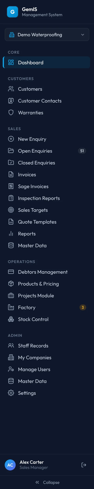
Core1
- Dashboard
Customers3
- Customers
- Customer Contacts
- Warranties
Sales10
- New Enquiry
- Open Enquiries
- Closed Enquiries
- Invoices
- Sage Invoices
- Inspection Reports
- Sales Targets
- Quote Templates
- Reports
- Master Data
Operations5
- Debtors Management
- Products & Pricing
- Projects Module
- Factory
- Stock Control
Admin5
- Staff Records
- My Companies
- Manage Users
- Master Data
- Settings
Making important information easier to understand
- What was difficult
- Business records are dense, and invoice information in particular was not reflecting the way users expected.
- Why it mattered
- People act on what a screen tells them. If the state of an invoice is unclear, the follow-up is wrong or late.
- The decision
- Give every list the same anatomy, lead with totals, and put the state of each record into plain words.
- In the interface
- Invoices open with billed, paid, outstanding and overdue totals; each row says Paid, Partial, Unpaid or Overdue. The accounting view shows whether each invoice is Synced, Pending or in Error, and when it last synced.
DemonstratesData-heavy UI design

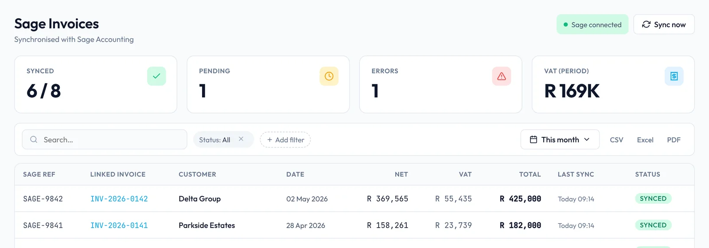
Improving operational visibility
- What was difficult
- Users had limited visibility of messages, notifications and tasks that needed their attention.
- Why it mattered
- Work that nobody notices does not get done — and in a connected system, one missed item delays the next stage.
- The decision
- Bring what needs attention to the places people already look, instead of expecting them to go and check.
- In the interface
- A messages banner at the top of the dashboard, a notification indicator in the top bar, counts in the navigation, and alert panels inside modules such as low stock.
DemonstratesSystems thinking
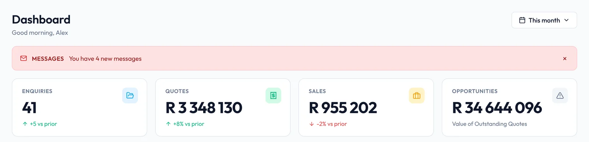
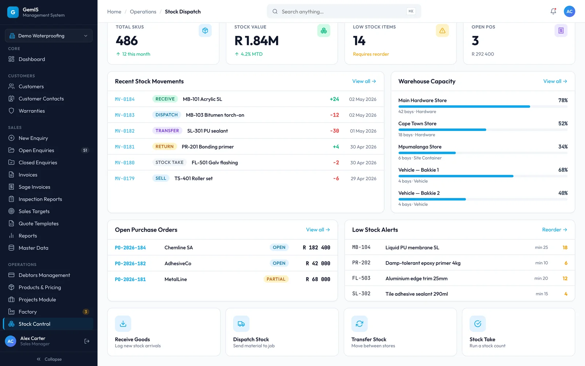
This is the design direction for surfacing attention. I am not claiming specific notification behaviour as implemented.
Clearer form feedback
- What was difficult
- Forms did not make it clear that information had saved, so users clicked save repeatedly.
- Why it mattered
- Repeated saves can create duplicate actions — and uncertainty about whether work was kept erodes trust in the whole system.
- The decision
- Make the moment of commitment unmistakable: show progress through the form, ask for one review, and offer one final action.
- In the interface
- New Enquiry is a four-step form with a visible stepper. The last step summarises what will be created and has a single Create Enquiry button; the user then lands on the enquiry list.
DemonstratesInteraction design
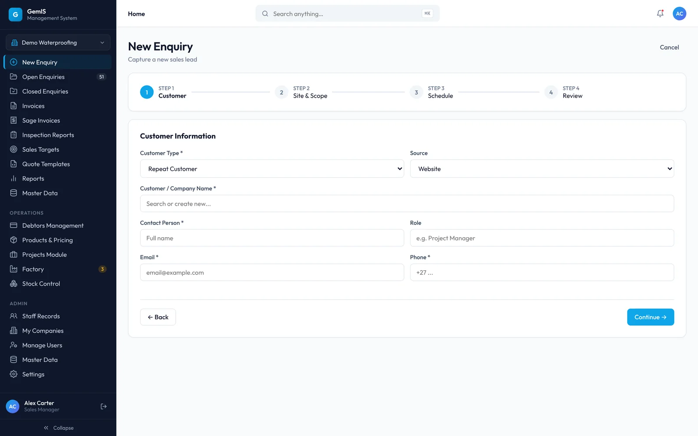

A more consistent product language
- What was difficult
- The interface did not adequately reflect GEMIS branding, and the product did not read as one system.
- Why it mattered
- Consistency is how people transfer what they learned on one screen to the next. In an ERP that saving is repeated across every module.
- The decision
- Carry the GEMIS identity through the shell and build each module from the same small set of parts.
- In the interface
- A branded sign-in and sidebar, and one page anatomy — title, summary figures, tabs, filters, table — reused from Factory to Staff Records.
DemonstratesUI craft and consistency
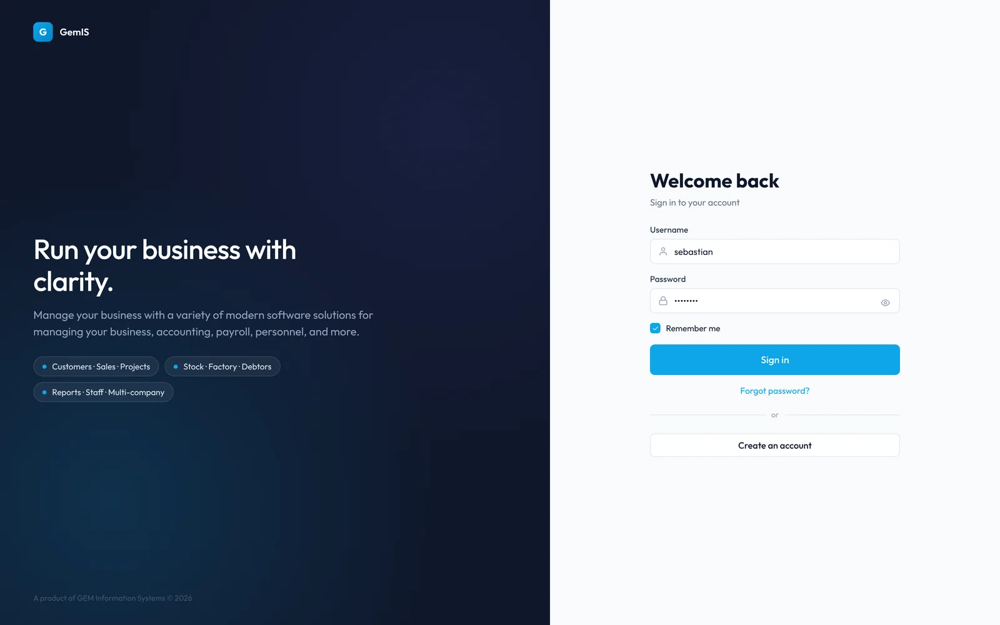
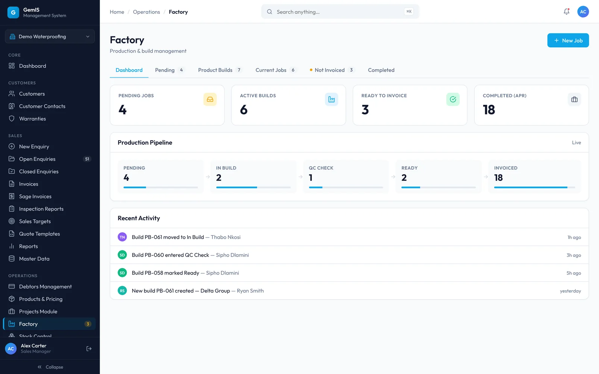

Simplifying the experience
- What was difficult
- Unnecessary features and scattered functions made the system more complicated than the work it supported.
- Why it mattered
- Complexity that does not serve a task is a cost every user pays on every visit.
- The decision
- Reconsider how features are organised before reconsidering whether they exist — keep what the business depends on, and put related functions together.
- In the interface
- Related functions live inside their module as tabs: Stock Control holds suppliers, purchase orders, stores, movements and stock takes in one place, and the dashboard offers shortcuts to the most common tasks.
DemonstratesProduct judgement

I describe this as reorganisation. I am not claiming that specific features were removed.
Initiative 02
ManaGEM Take-On
A new onboarding experience: from submitting business information, through AI-assisted extraction and review, to a final GEMIS check.
Designed prototype · development underway
07Rethinking client onboarding
From manual information capture to a guided onboarding experience.
A redesigned product is still hard to start using if getting into it is slow. New clients have to provide their business information before the platform is useful to them, and the traditional approach relied on collecting and capturing that information by hand. Take-On is my design for a more structured route in — an extension of the same redesign, not a separate product.
-

Take-On prototype · sample data -

Take-On prototype · sample data -
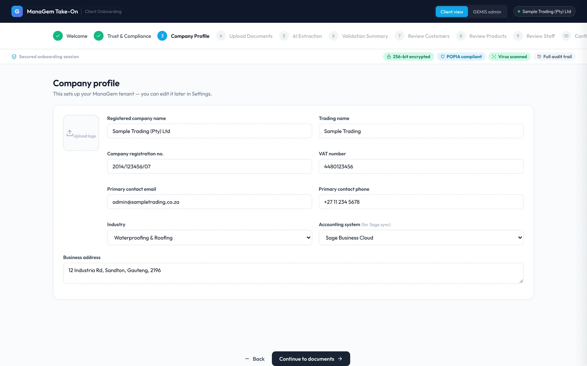
Take-On prototype · sample data -

Take-On prototype · sample data -
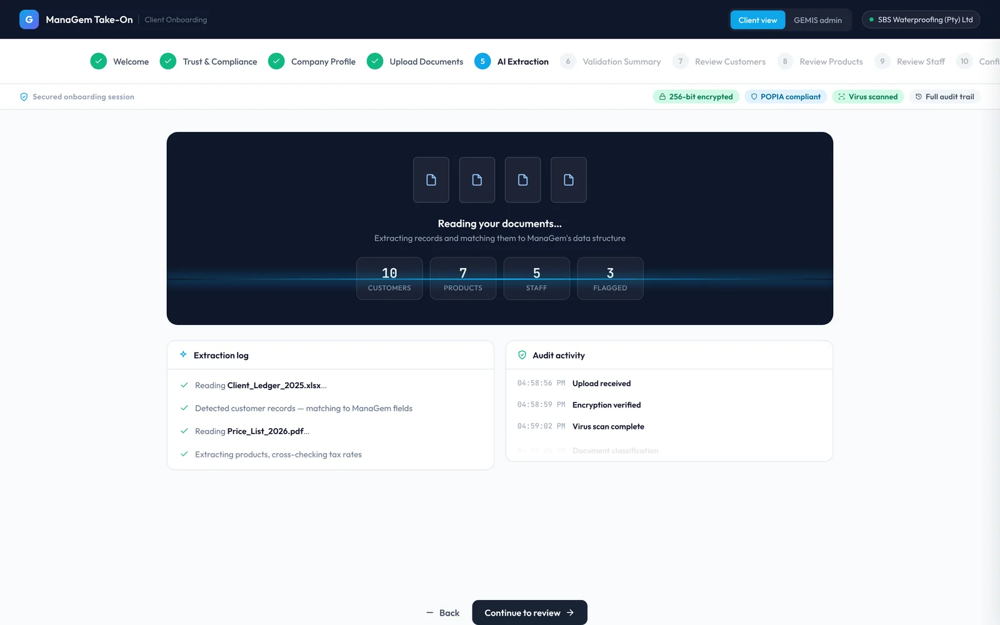
Take-On prototype · sample data -

Take-On prototype · sample data -
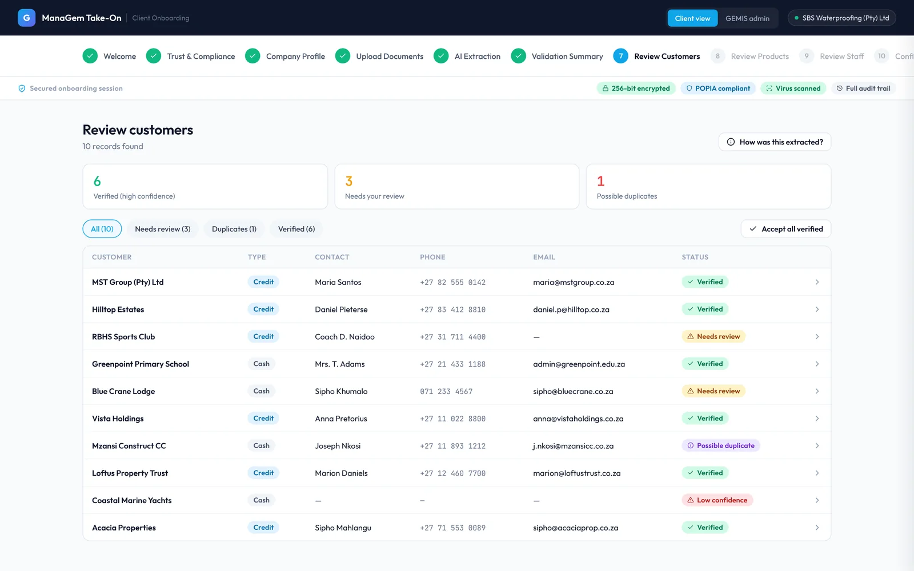
Take-On prototype · sample data -

Take-On prototype · sample data -
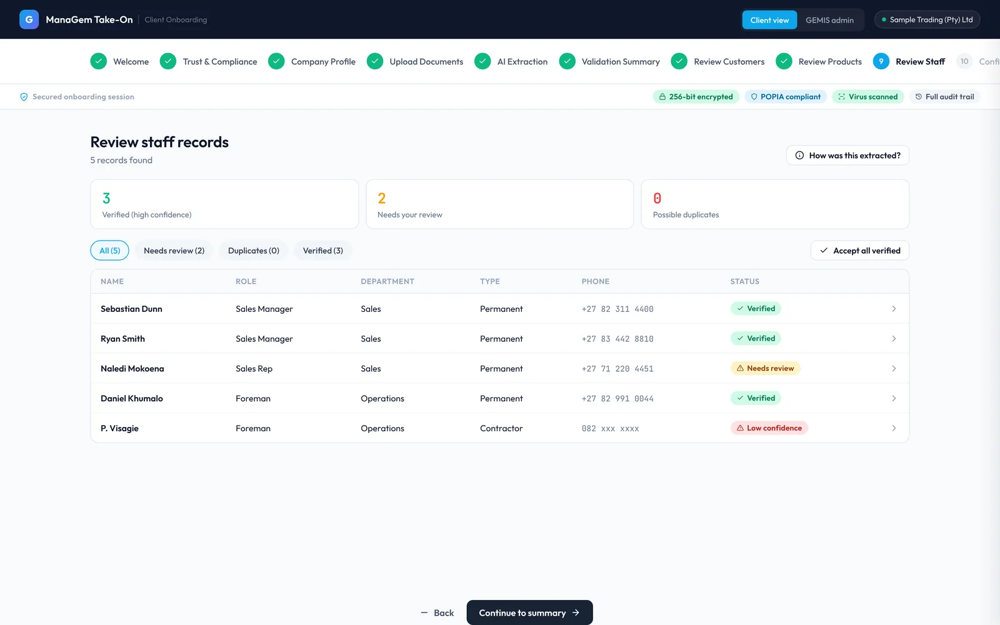
Take-On prototype · sample data -
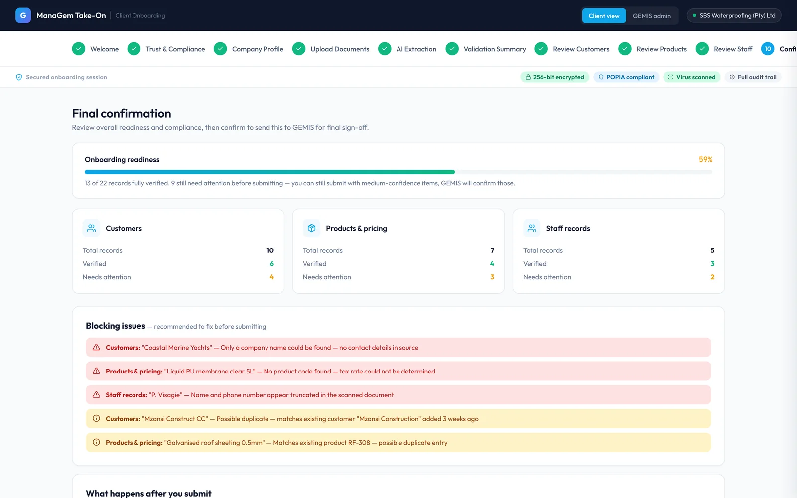
Take-On prototype · sample data -

Take-On prototype · sample data
Reading these screens correctly
- It is a prototype. The UX/UI design is complete and development is underway. It is not presented here as a released feature.
- The processing is simulated. The extraction, confidence scores and timings on screen are designed states, not output from a live AI integration or measured results.
- The records are samples. Company names, customers, products and staff are placeholder data, not client data.
- The legal and security wording is draft content. Statements about POPIA, encryption and audit trails show where that information belongs in the flow; they still need technical and legal validation.
08Key UX decisions
Five decisions about how much to trust automation — and how to show it.
The principle behind all five: AI-assisted extraction is not treated as infallible or autonomous. People should be able to understand, inspect and correct information before it is submitted.
Flexible document onboarding
Clients already hold this information somewhere — in a spreadsheet, a price list, a scanned page. Asking them to retype it record by record is the manual work the brief set out to reduce.
- One drop area per kind of information, so nothing needs to be labelled or sorted first
- Accepted formats are stated on every area: PDF, XLSX, CSV, DOCX, JPG, PNG
- Required and optional categories are marked, and the screen says what is still missing
- No document? Each category can be typed in manually instead
Transparent processing
A progress spinner asks people to trust something they cannot see. If a system is going to read a company’s records, it should say what it is doing while it does it.
- A running log names each document as it is read
- Counts of customers, products, staff and flagged records update as the step progresses
- An activity list records each stage with a time
Confidence-based validation
Reviewing every record with equal care is slow, and people stop reading. The design separates what looks ready from what needs attention, so effort goes where it matters.
- A summary first: how many records were found and how they break down
- Four plain-language states — Verified, Needs review, Possible duplicate, Low confidence
- State is carried by a word and an icon, not by colour alone
- Filters jump straight to the records that need a decision
Human-in-the-loop review
An extracted record is a suggestion until someone who knows the business agrees with it. So the design shows the evidence behind each record and leaves the decision with the client.
- Each record shows its source document, the original text and a confidence score
- A missing or doubtful field is called out — “Email not found in source document”
- Every field stays editable; a record can be confirmed or rejected
- Possible duplicates offer three explicit choices: merge with existing, keep both, or discard

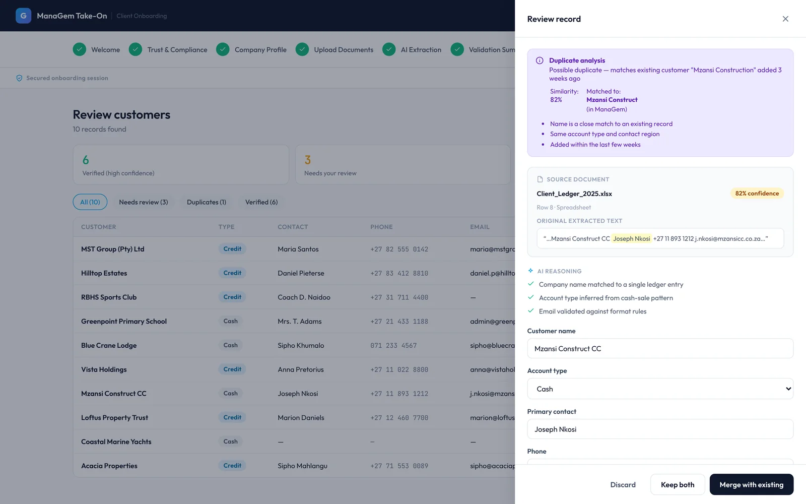
GEMIS verification
Automation does not remove the need for oversight. The flow ends by handing over to a person at GEMIS, and it says so — rather than implying that submitting means the data is live.
- The final step lists outstanding issues before the client submits
- The completion screen is titled “Submitted for GEMIS review”, not “Done”
- A GEMIS-side queue shows each company’s progress and what is awaiting sign-off


09Final product experience
More of the product, at a size you can read.
Select any screen to open it full size. Everything here comes from the two design prototypes.


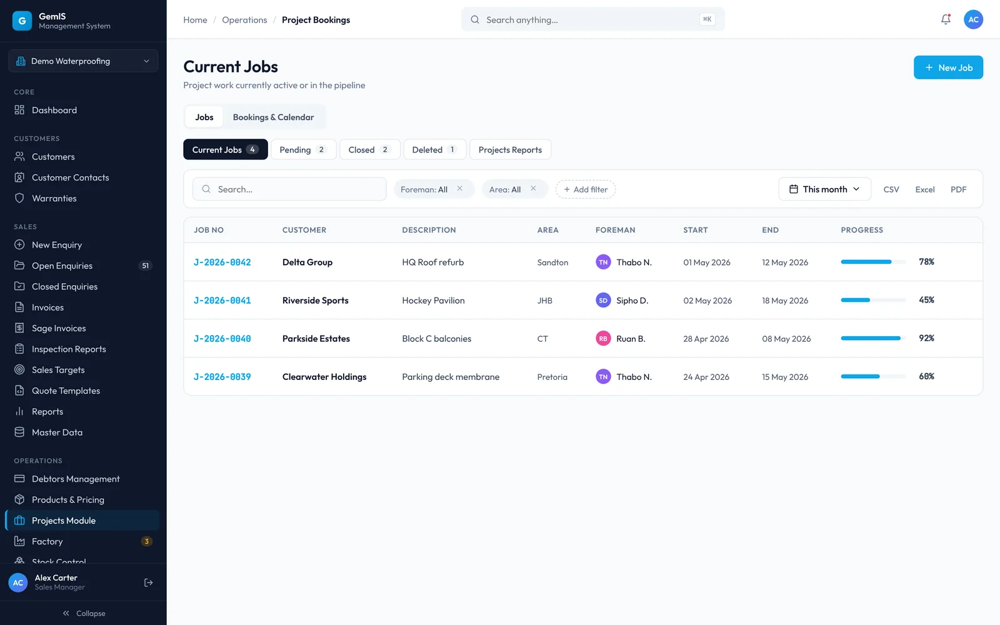


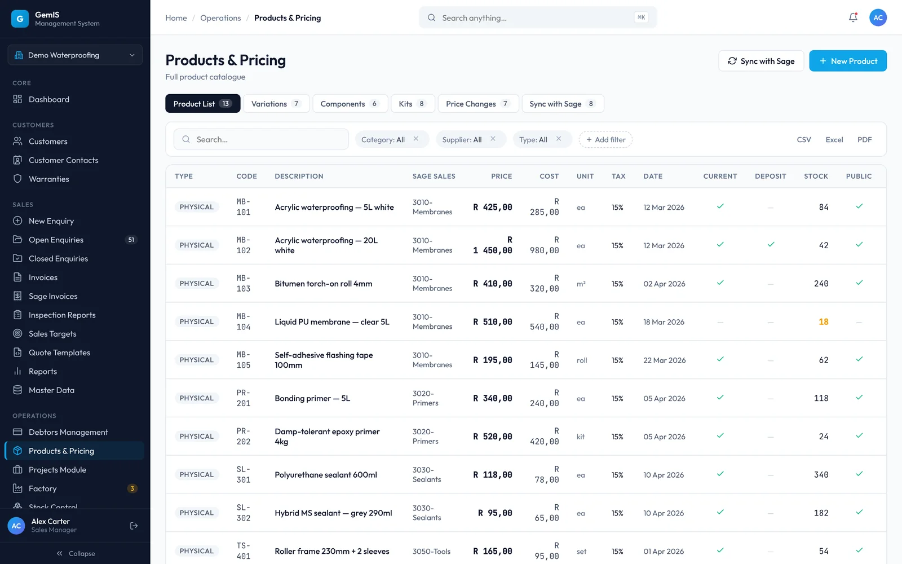


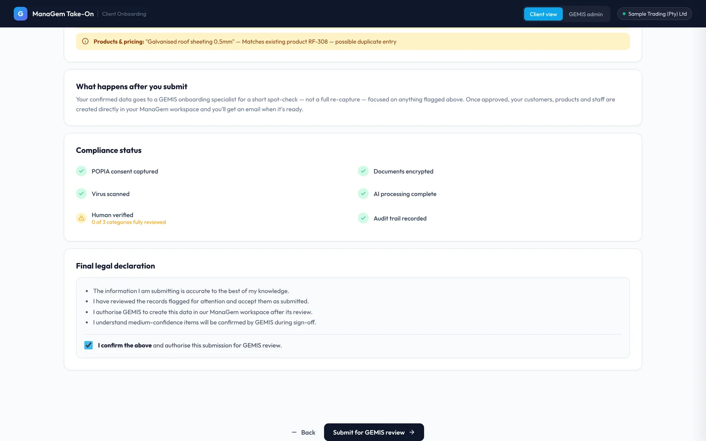
Both prototypes are built for desktop screens and use demo data.
10Outcome and implementation status
What exists today, stated precisely.
01 — Core ManaGEM redesign
Design complete
The redesigned experience is designed across the product’s main areas — dashboard, customers, sales, invoicing, debtors, products, projects, factory, stock and staff — and delivered as an interactive prototype.
This case study makes no claim about how much of the redesign is in production.
02 — ManaGEM Take-On
Prototype complete · development underway
The Take-On UX/UI prototype has been completed, and development is underway.
The AI processing in the prototype is simulated. It is not described here as a live integration, and clients are not presented as using it.
Not claimed
No business results are attributed to this work. I have not measured — and do not claim — reduced onboarding time, eliminated manual work, or changes in revenue, conversion or productivity. None of the designs were validated through user testing that I can document.
11Reflection
What this project changed about how I work.
The most useful thing I did on ManaGEM happened before I designed anything: working out what each screen was for, and what it was connected to.
In a system like this, a screen is never only a screen. The enquiry form decides what the pipeline can show. The invoice list is only as clear as the status it is given. Navigation, data, forms and feedback kept turning out to be the same problem seen from different sides, and I got better results once I stopped treating them as separate pieces of work.
Preserving what already worked was harder than replacing it. It meant understanding why a function existed before deciding where it belonged, and accepting that the right answer was often to move something rather than redesign it.
Take-On taught me to be careful with automation. The interesting design work was not the extraction step — it was everything around it: showing what the system did, admitting what it was unsure about, and keeping a person responsible for the final answer.
What I would want next is evidence. The decisions here are reasoned from the brief and the product, and the honest next step is to watch new clients use them.